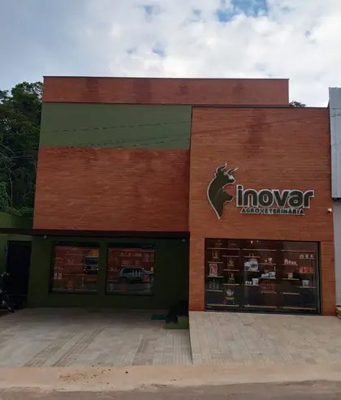
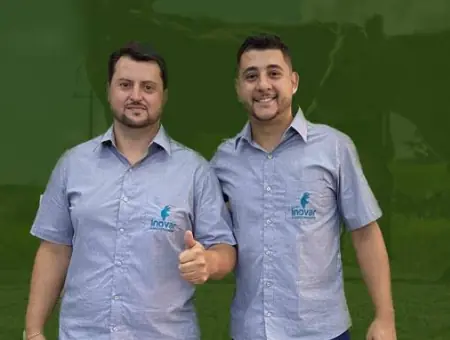

Dr. Fabrício Xavier Pereira
CRMV-ES 2305/VP
[ESPECIALIDADE]
Falar com o Dr. FabrícioDores do Rio Preto · Guaçuí · ES
Rações, medicamentos e atendimento veterinário em Dores do Rio Preto e Guaçuí, na loja ou na sua fazenda.

Serviços veterinários
Animal diferente, comendo pouco, mancando? A gente examina e diz o que fazer.
Vacina certa, na época certa, com nota e registro para a sua carteira sanitária.
Procedimentos feitos por veterinário, com orientação para o pós-operatório.
Diagnóstico de prenhez e exame sem achismo: você sabe o que tem no rebanho.
Plano montado para a sua propriedade, do começo ao fim. [REVISAR: reprodutivos/IATF, sanitários?]
O veterinário vai até a sua fazenda. Você não precisa embarcar o gado.
Produtos
Agropecuária e farmácia veterinária no mesmo balcão. Pergunte pelo WhatsApp se tem na loja e combine retirada ou entrega.
[CONFIRMAR CATEGORIAS E PRINCIPAIS MARCAS COM A LOJA]
Rações, sal mineral, proteinado e suplementos.
Vacinas, vermífugos, carrapaticidas e medicamentos. Os de venda controlada, com orientação do veterinário.
Rações e cuidados para cães e gatos. [CONFIRMAR]
Limpeza do equipamento, pré e pós-dipping.
Lonas, inoculantes e o Silotrato. [REVISAR O QUE É O SILOTRATO]
Seringas, cercas, bebedouros e ferramentas.
Procurando algum produto?

Os veterinários
Atendimento na loja ou na sua propriedade.
CRMV-ES 2305/VP
[ESPECIALIDADE]
Falar com o Dr. FabrícioCRMV-ES 2290/VP
[ESPECIALIDADE]
Falar com o Dr. IgorAssistência a campo
Vacinação do rebanho, exame, ultrassom e protocolo feitos no curral, sem embarcar ninguém.
Atendemos Dores do Rio Preto, Guaçuí e [CIDADES ATENDIDAS E DISTÂNCIA]
Você responde 5 perguntas rápidas e a mensagem chega pronta no WhatsApp.
Calendário do rebanho
Os manejos mais comuns na nossa região, mês a mês. O mês de agora já aparece marcado.
[REVISAR COM OS VETERINÁRIOS: obrigatoriedades, idades e épocas de vacinação mudam e precisam ser validadas antes de ir ao ar]
Dia a dia vet
Avaliações
4,9
Nota da loja de Dores do Rio Preto no Google, com 15 avaliações.
Ver no Google[DEPOIMENTO REAL 1, copiado do Google com autorização]
[NOME]
[DEPOIMENTO REAL 2]
[NOME]
[DEPOIMENTO REAL 3]
[NOME]
Lojas
Agropecuária e farmácia veterinária em Dores do Rio Preto e em Guaçuí, com veterinário para atender produtores de toda a região: [CIDADES DA REGIÃO]. Compre na loja, retire na porta ou receba na propriedade.
Rodovia [RUA E NÚMERO], Dores do Rio Preto, ES, 29580-000
[HORÁRIO]